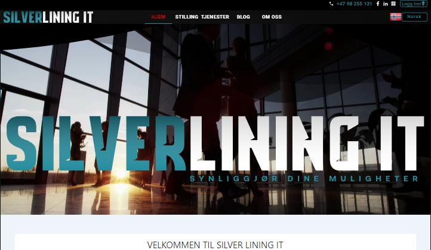
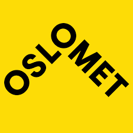

ABOUT ME
My name is Gebi Beshir. I’m an experienced software developer, graduated with a bachelor's degree, as a software engineer from OsloMet, and have been learning and working since then.
I have always been interested in computers, technology and electronics, so I studied “Dataelektronikk” at Årstad VGS, previous to studying at OsloMet, which helped me in turn to better understand electronics and computers in general, and be a better programmer.
Having a great passion for programming is also what pushed me through the school, and also what drives me to keep learning new things in programming every day.
MY SKILLS
At the time when i was done with my school, I was less experienced to do what I am capable of doing now, in another word, my skills now is well above a typical students who just finished their school as an engineer of computer science.
While working as a freelancer, I have developed web applications using AngularJS, ReactJS And have used many different tytpes of technologies related to software development, and as well as developing website without frameworks, such as this website, which is developed entirely with HTML, CSS and JavaScript.
I have farther worked for a year at DnB with real problems as a full-stack developper, using Java and many related tools for Java development.
Otherwise although I'm done with being a student at school, my studying still has continued, and I'm continuously learning new things and improving what I've learned, developing my skills! The following charts indicate where I think I am standing right now, in the majorly known software development languages and frameworks.
HTML
CSS
JavaScript
AngularJs
ReactJs
Java
.NET
C++
MY JOURNEY
The following timeline shows, my journey through an academic ladder, starting from VGS (Videregående Skole), and including projects I've worked on, as well as work experience.
WebApp: SILVERLINING IT
I also worked on website in the time between January and April of last year, on a website entirely developed in ReactJS-hooks. This is a website that is fully dynamic and user editable, which uses Google Firebase as its backend. The website is for the most part done, but is not deployed into production yet.
The following are list of functionalities in the website.
- - Jobs listing
- - User registration
- - Blogging
Visit page
List of technologies and tools i used during this time are as follows
- ReactJS
- HTML
- CSS
- JavaScript
- NPM
- Figma
- IntelliJ IDEA
- BitBucket
- Firebase
28 April 2021
I got my first job at DNB, via SILVERLINING IT and worked there for about a year. I got introduced to a stack of tools and technologies that are mostly new to me at the time, which I quickly managed to get to know them and use. I mainly worked on back-end development in Java.
My main responsibility here was to work with RESTful Java API, regarding development, functionality expansion, incident debugging, testing and patching and other tasks related to this.
List of technologies and tools i used during this time are as follows
- Java
- Spring
- Shell
- IntelliJ IDEA
- Datagrip
- SQL
- POSTMAN
- Confluence
- Jira
- Linux
- Windows
- VisualStudio Code
- Slack
- BitBucket
31 December 2020
Freelancing / coding
At this time i mainly did a self studying for more coding experiences in AngularJS, ReactJS, HTML, CSS, Java, and more, including trying out and using container technologies such as Docker, since using containers was not taught at school at the time, and as well as worked as a frelancer.
As a frelancer, i worked on 4 web-applications
- - HOO: Hawaasa Oromo Oslo
- - WOT: Hawaasa Oromo Trondheim
- - Osloskredder
- - MyWebApp (this website)
using mainly AngularJS on three of them other than MyWebApp, wich is this website (portefolio website for myself). Note this portfolio page have been updated by me recently with new informations about my self.
List of technologies and tools i used during this time are as follows
- Java
- CSS
- Firebase
- IntelliJ IDEA
- AngularJS
- NPM
- NodeJS
- Shell
- Linux
- Windows
- VisualStudio Code
- ReactJS
- Docker
- GitHub
03 November 2019
UiO: MSc: Software development
Went to UiO for a year and came back to Bergen in the summer of 2019 and I decided to apply for a job instead.
My main reason was that I was a little unlucky and it did not go as well as I hoped, partly because I worked in groups on crucial projects with students who eventually quit attending school after a while, and I decided that, i should perhaps retake MSc at a later point in the future depending on my situation.
15 August 201820 June 2019
Pause
During this time, I mainly took my self a break from full-time studying for about a year, where i spent the time with family and my loved one in Ethiopia, as well as prepared myself for the MSc that i was goint to start at UiO.
Other than that I also took the time, to try think of and attempt personal ideas that i had in mind such as game development for hobby and learning.
June 2017August 2018
Dataingeniør: Bachelor i ingeniørfag
I finally started the higher education as I wished. The CS study at OsloMet focused mainly on Java and system development on various platforms with several programming frameworks and programming languages, such as Java, C/C++, AngularJS, C#, .NET, Databases, cloud services, and system development processes.
I completed with a bachelor in Computer Science.
My last bachelore project was an android phone app called "Idretts-App"
The following technology and tools was used for Idretts-App
- Java
- CSS
- XML
- Firebase
- AndroidStudio
- GitHub
01 June 2017
I went to "Sonans Privat Gymnas" for the math courses: R1, R2, FY1. Since i still was missing those subjects in my GENS inorder to be qualified for higher education.
15 August 201220 June 2013
Førstegangstjeneste
Completed a one year "alminnelig verneplikt" in north Norway at Bardufoss.
19 January 201121 December 2011
Åsane VGS: Påbygg til GENS
I went a one year education program specially prepared for students with a vocational study background, in order to get GENS (Generell Studiekompetanse) that i needed for a higher education.
The study was specialized in such a way that it covers all the missed subjects that are necessary to fullfill the obligatory requierements for GENS.
After being done here, i got my GENS, but was still missing special Mathematics subjects R1, R2, and FY1 inorder to apply for higher education.
15 August 200906 October 2010
I went to "Dataelektronikk" at Årstad VGS. It was a vocational study in computer electronics. The study involves, hands on circuitboards designing in Multisim, diagnosing and repairing of computer cirquit boards, and as well as including structural electro installations.
At the end of this education its expected the students gets deployed to an actual work places, where they get to become "lærling" where many ends up working there for always.
I was placed temporarly at Otera Dalhaug, where i worked for a couple of months as a "service elektriker" doing mostly installing and testing of fire alarms, and installations of network cables at a building sites, aswell as repairing or and installation of fiber optic network cables. I did not continue there do to my interest of higher education plan for the future.
20 August 200624 June 2009